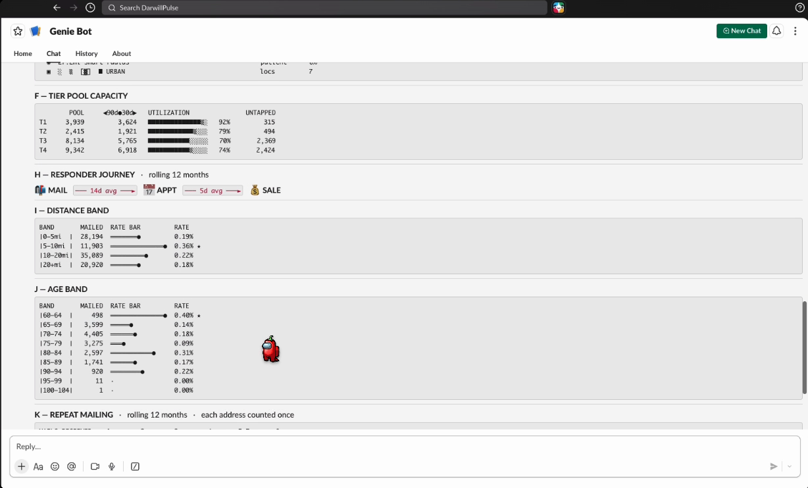

Hearing Care
Campaign
Intelligence
The answers were always in our data.
We made them one message away.
Meet the team.
Fragmented data. Slow access.
Delayed decisions.
Intelligence is scattered
Campaign data lives across four CRM platforms, Tableau workbooks, and ad-hoc SQL. There is no single place to ask a question. What you get depends on who pulls it, from where, with which rules applied.
And access takes time
If you can't write SQL against these systems, you wait for someone who can. Every question becomes a request, every request becomes a queue, and the decision waits with it.
This kind of investigation could be self-served.
The ticket, answered.
What you can ask it today
Scorecards & rankings
Trends & forecasting
Full funnel
Templates & formats
Mailing pressure
Geography & competition
Pool & targeting
Operations
"Can it follow one customer, all the way through?"
Where the time actually went
Supervisor Orchestration Architecture
User asks in Slack
Plain English, in the channel they already work in
Supervisor agent
Reads intent · routes · dispatches tools and Genie · combines the answer
wingman_search
Resolves any location or company name to the exact entity and CRM
question_distiller
Expands a scorecard ask into the full question set
beltone_genie
NL → SQL · Beltone network
cbs_genie
NL → SQL · CounselEAR / Sycle / Blueprint
Unity Catalog · governed data
UC metric viewsgold layer tablesmatchbackprospect poolcompetitors
Training Genie: the usual way vs ours.
The usual way: clicks
Our way: code
"Generate a scorecard for 16858"

It lives in Slack.
A normal day in the channel.
Built the way Databricks says to build it.
Privacy: hidden & excluded columns
First name, last name, and other PII are excluded at the space level. They can never appear in an answer, no matter how the question is phrased.
Usage guidance on every query
All 119 training queries declare their grain, time window, and when to use them.
Measures & filters
Governed measures and parameterized filters, so a rate is computed one way, everywhere.
Consistent aliases & column metadata
Every column carries a description and one canonical alias across both spaces.
SQL join specs & guardrails
Join paths are declared, fan-out traps are guarded, and Genie flags immature matchback data on its own.
One definition per metric
Metric views in Unity Catalog mean everyone in the organization asks the same data and gets the same answer.
What this changes.
Money stops leaking
Speed becomes the product
More questions, fewer tickets.
Now so is the answer.